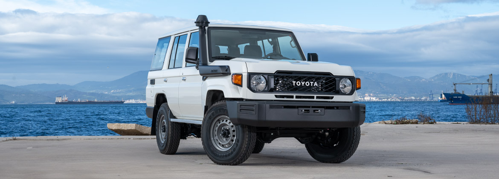

Legendary is a much overused word but, in the case of the Land Cruiser 70 series, it is completely justified. 30 years on from its debut, the Land Cruiser 70 series can still claim to be the most rugged, most reliable vehicle for handling the harshest conditions and toughest situations which life can throw at it.
It is the standard fleet vehicle for many front-line agencies who demand the ultimate in dependability. Customers can trust this model to deliver unprecedented performance.